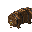

MeadMead
Honey and water left to work in an oak barrel, and aged in a cool cellar until it's mellow and strong.
The barrel is two blocks long; its tap faces you.
The must
Use honey jars, water buckets and up to three additions on the open barrel. Two jars to each bucket at least.
Press the wax seal on its screen (or crouch and use it) to seal it.
Up to six jars and two buckets: three bottles a bucket.
The styles
| Style | With | Adds |
|---|---|---|
| Mead | nothing | Regeneration |
| Sack Mead | extra honey | Absorption |
| Melomel | berries | the berry's |
| Cyser | apples | Haste |
| Metheglin | herbs | the herb's |
| Bochet | caramel | Warmth |
| Braggot | wheat | Strength |
Every mead keeps its honey's effect too.
Bochet and braggot
Cook a jar of honey in a furnace until it's dark and bitter-sweet: caramelised honey makes a bochet.
Wheat in the must makes a braggot, half mead and half ale.
A smoker or campfire caramelises honey too.
Ageing
Mead is drinkable after three days, and better the longer it's kept, up to vintage.
| Quality | Days | Lasts |
|---|---|---|
| Young | 3 | ×1.0 |
| Good | 7 | ×1.5 |
| Fine | 14 | ×2.2 |
| Vintage | 28 | ×3.2 |
A vintage's own effect is stronger too. Use the barrel to see how it's coming on.
The cellar
A barrel ages only where it's cool: no sky above, nothing hot nearby, and dug down below the surface (or in cold country).
Warm, it stops ageing; warm two days altogether and it sours.
Sour mead draws off as honey vinegar.
Melomels
| Berry | Adds |
|---|---|
| Blueberry | Night Vision |
| Haskap | Resistance |
| Cloudberry | Slow Falling |
| Lingonberry | Fire Resistance |
| Raspberry | Jump Boost |
| Blackberry | Strength |
| Elderberry | Regeneration |
| Sea Buckthorn | Health Boost |
Sweet berries and glow berries work too.
Drawing it off
Use a glass bottle on the barrel to draw a bottle of mead from the tap.
Each bottle is named for what it is: a Fine Raspberry Melomel, a Vintage Lavender Sack Mead.
Young mead can be rough: let it age.